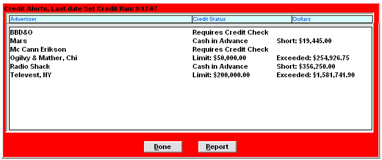

Credit Management
This section explains how the system tracks credit status for each advertiser and agency. There are three main fields used for this purpose: the credit approval status, which can be set to approved, denied, or requires checking; credit restrictions, such as cash in advance or other limitations; and payment rating, such as Normal, Slow, In Collection, and so on. The Credit Alerts screen is used in conjunction with the credit status values and notifies Collections users of clients that require action, such as new clients that must have their credit status approved, or of clients that have exceeded their credit limit.
Credit Set Up
Site Options - Accounting
A group of settings in the Site Options screen controls how the Credit Limit is calculated:
- Cutoff Proposals/Orders when Credit Limit reach (Unchecked-warning only): If checked, and an advertiser/agency has exceeded their credit limit, one of two messages will appear depending on the status of the proposal.
- If the proposal is any status other than approved, an exceeded credit limit warning will appear with the option of continuing with the save.
- If the proposal is approved, or you are trying to save an order whose advertiser/agency has exceeded their limit, you will receive a message preventing you from saving.
- If the question is unchecked, and an advertiser/agency has exceeded their credit limit, an exceeded credit limit warning will appear with the option of continuing with the save.
- % of Credit limit to trigger attention: If you define a credit limit for your advertisers/agencies, the system will alert you when approaching that limit. This currently is not implemented.
- When computing Credit Limit, include: To update the values on the Advertiser and Agency Credit Status Report, you need to define a Set Credit icon that can be run daily. When you activate this icon, it will calculate and update the advertiser/agency values that appear on the report. This determines the dollars used to arrive at an advertiser/agency’s credit limit.
- Current A/R No: will take the current outstanding invoices into account, as well as all new and existing contracted dollars.
- Unbilled $’s Yes: will use all unbilled future and current dollars when determining the credit limit.
- New and Existing Contracts for X Weeks: This value should normally be set to six.
- Date that the advertisers and agencies unbilled value computed: This date should be yesterday’s date so that the Set Credit program will calculate new credit limit values for today and each date requested after that.
User Options
The following User Options settings in the Selected Fields area must also be configured.
- Credit Restrictions in Advertiser and Agency: This allows a user to change an Advertiser/Agency’s Credit Restrictions in the Advertiser/Agency Screens. Orders cannot be scheduled if an Advertiser/Agency has any credit restrictions.
- Payment Rating in Advertiser and Agency: This allows a user to change an Advertiser or Agency’s Payment Rating in the Advertiser/Agency Screens.
- Change Advertiser/Agencies Credit Rating: This allows a user to change an Advertiser/Agency’s Credit Rating in the Advertiser/Agency Screens. Orders can only be scheduled if an Advertiser/Agency has been approved.
Advertiser and Agencies
A new client payee (agency or direct advertiser) or advertiser is defined when the proposal or order is entered by any salesperson or user. That user enters the minimum information needed for the client. Accounting should verify the information the user entered. Accounting or Traffic can verify and define any additional information for the advertiser.
New Agency/Advertiser Credit Restrictions
These client input fields have many items that accounting may want or need to change for a client. The Payment Rating is used to put an account ‘In Collection’, and can also be changed for in the Collections Screen. All other items must be changed in the Advertiser or Agency List screen.
Credit Approval: Set Credit Approval Status. The three options are: Requires Checking, Approved, and Denied.
Credit Restriction: Credit Restrictions allow limitations to be placed on agencies and advertisers before they are allowed to be on the air. If the restriction is placed on an agency, it applies for all advertisers of that agency. If placed on an advertiser, it applies for just that advertiser, and other advertisers represented by that agency are not affected. All new clients are defined with No Restrictions. This information is shown on the proposal/order screen. This item can also be changed on the Collections Screen for the client.
The Counterpoint Credit Restrictions allow both assignment and monitoring of restrictions. The Credit Restrictions for an agency or advertiser can be entered or modified in the Collections Screen for the selected client, or in the Advertiser or Agency List screen.
The available credit restrictions are:
- No restrictions: The client can order any amount of business
- Credit Limit: This is where the client maximum credit amount they are allowed is defined.
- The client credit is computed when the ‘Set Credit’ program is run
- The client credit adds the air time and NTR revenue from the contract and the dollars in the current A/R balances
- Cash in advance – weekly: add current A/R balance with dollars for the unbilled weeks through the end of the next Monday-Sunday week
- Cash in advance – monthly: add current A/R balance with dollars for the unbilled weeks through the end of the next standard broadcast month
- Cash in advance – contract: add current A/R balance with ordered dollars for the contract
- Prohibit new orders: The client is not allowed to place any orders at all
- Payment Rating: This is where you can put an account “In Collection”. The other options are Quick Pay, Normal Pay, Slow Pay, Difficult. This information is also shown on the proposal/order screen. All new clients are defined by default as Normal Pay. (This value can also be changed on the Collections screen.)
- Credit Rating: is not currently implemented
Processing Client Credit Data
A program called “SETCRDIT.EXE” calculates client credit and must be run every night, either on one of the network PCs, or on the server. The projected spot values are calculated differently for each client, depending on which credit restriction was assigned to that client. This program updates the A/R, unbilled spot values, and projected spot values in all advertisers and agencies.
Setting Up Set Credit
This should be set up as a Microsoft “Scheduled Task”. With Scheduled Tasks, you can schedule the credit program to run at a time that is most convenient for you. Scheduled Tasks run in the background. To set it up, add a schedule task and follow the wizard steps.
The steps the wizard will take you through are:
- The path and program that you will run for the scheduled task will be csi\prod\exe\setcrdit.exe
- The Start In must be set to the location of the Traffic.ini (typically csi\prod\data)
- Define the name of the scheduled task (for example, “Counterpoint Credit Check”)
- Define how frequently the task should be performed. This could be daily or when the computer starts, unless the Finance Manager prefers weekly
- If Daily or Weekly is chosen, define a start time
- This must be run after midnight, because it sets the date run in the Site Option Accounting section. If the date it sets does not equal the today’s date on each PC, the Credit Alert will not appear
- We recommend that this program time to run is setup perhaps around 2AM each night
Manually Setting Credit
The client credit calculations can be manually done by a user in the Accessories -> Set Credit. (The user will need to have green/update access to the Collections screen to do this.)
Once selected, you will receive a message that reads “This should be run nightly on the server. If run here, the system may be slowed down for several hours. OK to proceed?”
Click the OK button to begin the program.
Exceeding Credit Limit
When the option “Cutoff Proposals/Orders when Credit Limit reached (Unchecked-warning only)” is checked on in Site Options -> Accounting, advertiser/agency credit limits are automatically calculated. When a proposal is set to Approved or an order is entered, the advertiser and agency unbilled amount is adjusted by the amount of the new order/proposal, or the dollar change if a contract revision has occurred (trade dollars are not applied against credit limits). When Final Invoices are generated, the unbilled total is automatically reduced.
This constant calculation reduces the times SetCredit must be run. SetCredit always must be run upon initial set up and periodically.
If “Cutoff Proposals/Orders when Credit Limit reach (Unchecked-warning only)” is checked on in Site Options -> Accounting, and an advertiser/agency has exceeded their credit limit, you will receive one of two messages when trying to save a proposal or an order.
- If the proposal is any status other than approved, an exceeded credit limit warning will appear with the option of continuing with the save
- If the proposal is approved, or you are trying to save an order, whose advertiser/agency has exceeded their limit, you will receive a message preventing you from saving
- If the question is unchecked, and an advertiser/agency has exceeded their credit limit, an exceeded credit limit warning will appear with the option of continuing with the save
Credit Alert
Credit alerts will automatically appear upon logging into the system for any user who has full access to the Collections Jobs screen.
Credit alerts can be set up to allow approved users to enter clients with no restrictions, or to approve clients with restrictions. Non-approved users can enter new clients with a credit status of “needs checking”.
You can always view the credit alerts by selecting Accessories -> Show Credit Alerts.

The Credit Alert screen shows:
- The last date the credit calculation “set credit” was run
- Clients defined as cash in advance
- Clients who have exceeded their credit limit
- New clients added by sales that require credit approval
- These clients may be attached to proposals
- If the proposal has become an order, it cannot be scheduled until the credit has been changed in List-Advertiser or Agency to approved
You can directly access the client by either double clicking on it or selecting the client and clicking the Check button.
Pressing the Report button will automatically generate the Agency and Advertiser Credit Status Report. The report can also be run by going to the Cash Accounting section of the Report list, and selecting Agency and Advertiser Credit Status. When running the report in this manner, other options may be selected, such as including No New Orders, collection comments, etc.
Credit Alert Reports
An alternative way to see contracts that are pending credit alerts is to run the Paperwork Summary by Credit Checks Only.
Deselect NTR, to make the report more concise and easier to read.
Credit Approval Process
Any new client entered by a salesperson automatically has their credit set to “Requires Checking”.
For those advertisers or agencies whose Credit Approval status is ‘Requires Checking’, orders or proposals can be entered, but will not be able to be scheduled until the Credit Approval status is changed to Approved. The Traffic Department will see a warning when they try to schedule the order. No spots will be created for the order until it the credit is Approved.
For those advertisers or agencies whose Credit Approval status is ‘Denied’, orders or proposals cannot be entered for them and the order entry person will get the message that will not allow them to complete entry of the order.
Placing an Account into Collections
To place an Account in Collections, select “In Collections” from the Payment Rating field. This can be done in the Agency, Advertiser, or Collections Screens.